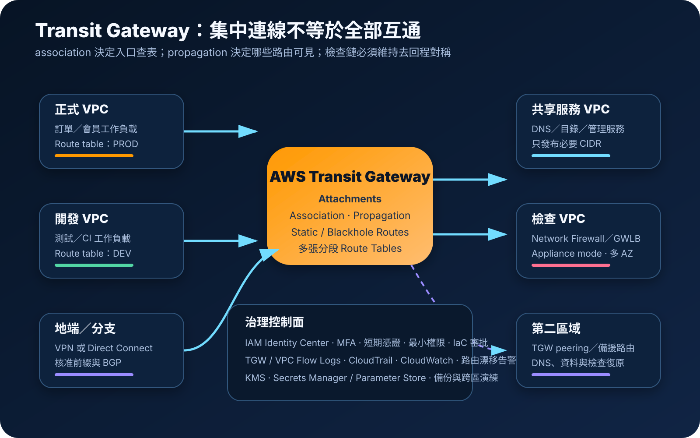

AWS Transit Gateway：集中路由、網路分段與混合連線治理
AWS Transit Gateway 是區域層級的受管虛擬路由器，用中央 hub 連接多個 VPC、Site-to-Site VPN、Direct Connect gateway、Connect 與跨區 peering。它可降低大量點對點連線的複雜度，但中央化也會放大錯誤路由、權限過寬、流量繞路與單一治理面的影響。
作者：Dr. William｜查閱與發布：2026-10-18
服務定位
AWS Transit Gateway 適合把多 VPC 與地端網路從複雜的全互連拓撲，改成每個網路只連到中央 transit hub。封包進入某個 attachment 後，Transit Gateway 依該 attachment 所關聯的 route table 查找最符合目的 CIDR 的下一跳，再送往另一個 attachment。
服務本身具區域性。跨區連線需建立 Transit Gateway peering，並在兩端配置靜態路由；跨帳號使用通常由網路帳號透過 AWS Resource Access Manager 分享 Transit Gateway，再由工作負載帳號建立 VPC attachment。這些能力簡化連線數量，卻不代表所有網路都應彼此可達。
核心概念與服務邊界
路由與連線元件
- Transit Gateway：區域虛擬路由器與中央連線 hub。
- Attachment：連接 VPC、VPN、Direct Connect gateway、Connect、peering 或其他支援資源的邏輯介面。
- Route table association：決定某 attachment 送入的流量要查哪一張 Transit Gateway route table；每個 attachment 同時只能關聯一張。
- Route propagation：把 attachment 可達的 CIDR 動態加入一張或多張 route tables；VPC attachment 會傳播 VPC CIDR。
- Static route：手動指定目的 CIDR 與下一跳；peering attachment 主要依賴靜態路由。
- Blackhole route：明確丟棄符合目的 CIDR 的流量，可用於阻斷、退役或避免錯誤路徑。
治理與安全元件
- 分段 route tables：用正式、開發、共享服務、地端與檢查區建立獨立可達邊界。
- AWS RAM：跨帳號分享 Transit Gateway；擁有者管理分享、route tables、association 與 propagation。
- Attachment subnets：每個啟用的可用區選一個子網放置 Transit Gateway 網路介面，並保留足夠 IP。
- Appliance mode：對狀態型網路設備 attachment 維持流量的可用區對稱性，避免回程改走其他設備。
- Flow Logs：Transit Gateway Flow Logs 與 VPC Flow Logs 補足資料平面可視性。
- CloudTrail／CloudWatch：分別記錄控制面 API 與流量、錯誤及拓撲狀態，建立變更和事件證據鏈。
適合與不適合的使用情境
適合
- 同一區域有多個 VPC，需要降低 VPC peering 全互連數量並集中管理路由。
- 多個 AWS 帳號要透過中央網路帳號連接共享服務、DNS、檢查 VPC、VPN 或 Direct Connect。
- 需要用多張 Transit Gateway route tables 隔離正式、開發、合作夥伴與地端網段。
- 要把東西向或南北向流量導向 AWS Network Firewall、Gateway Load Balancer 或第三方檢查設備。
- 跨區 VPC 數量增加，需要以 Transit Gateway peering 建立受控的區域間路由。
不適合或不能單獨完成
- 只有兩個 VPC、流量小且路由簡單；VPC peering 或 PrivateLink 可能更直接且成本更低。
- 只需讓消費者存取單一服務，不希望取得整段網路的雙向路由可達性；應評估 PrivateLink。
- VPC CIDR 重疊且需要彼此直接路由；Transit Gateway 的 VPC attachments 不能靠一般路由消除重疊問題。
- 需要應用層驗證、API 授權、內容檢查、DDoS 防護或資料列權限；Transit Gateway 只處理路由。
- 沒有能力持續管理 CIDR、路由表、流量對稱性、跨帳號責任、成本分攤與復原演練。
示意故事案例：多帳號零售平台的集中網路
以下為示意案例，不代表特定企業或正式部署。 一家零售企業把正式訂單、會員、資料分析、開發測試與共享服務分散於不同 AWS 帳號。中央網路帳號建立 Transit Gateway，透過 AWS RAM 分享給組織內核准帳號。各工作負載 VPC 在兩個可用區建立 attachments，但不使用單一預設 route table 讓所有環境互通。
正式與開發 attachments 分別關聯不同 route tables。正式網路只傳播必要服務 CIDR，開發網路無法直接到正式 VPC；兩者若要連地端或網際網路出口，流量先導向檢查 VPC。檢查 VPC attachment 啟用 appliance mode，狀態型防火牆分散於多個可用區，去回程路由都經相同檢查鏈。
網路管理員透過 IAM Identity Center、MFA 與短期憑證操作，Transit Gateway、attachments、route tables、propagations 和 blackhole routes 皆由 IaC 管理。應用密碼存於 Secrets Manager 或 Parameter Store，資料與日誌依分類使用 KMS。CloudTrail 監控路由與 attachment 變更，Transit Gateway Flow Logs、VPC Flow Logs、CloudWatch 與防火牆日誌追蹤異常路徑。第二區域另建 Transit Gateway、attachments 與可重建路由，搭配資料備份及 DNS 切換演練。

建置與運作流程
- 盤點網路需求：列出帳號、區域、VPC CIDR、地端網段、流量方向、協定、頻寬、延遲、資料分類、RTO 與 RPO。
- 治理 IP 地址：以 IPAM 或等效流程配置不重疊 CIDR，保留成長與跨區空間，避免事後 NAT 補洞。
- 定義分段模型：先畫出正式、非正式、共享服務、檢查、合作夥伴、地端和黑洞邊界，再建立對應 route tables。
- 建立 Transit Gateway：設定 ASN、DNS support、route table 預設 association／propagation、必要標籤與變更責任；敏感環境通常關閉過度寬鬆的預設傳播。
- 建立跨帳號分享：由中央網路帳號透過 AWS RAM 只分享給核准 OU 或帳號，定義 attachment 申請、接受、命名與退役流程。
- 建立 VPC attachments：每個需要的可用區選一個專用子網，預留 IP，避免把 attachment 子網誤當工作負載安全邊界。
- 設定 association 與 propagation：每個 attachment 關聯一張 ingress route table，只向必要 route tables 傳播 CIDR，必要時加入 blackhole route。
- 更新 VPC route tables：在來源子網加入指向 Transit Gateway 的目的 CIDR；同時確認回程 VPC、地端與檢查路由完全對稱。
- 部署檢查路徑：若使用狀態型設備，建立多可用區檢查 VPC、啟用 appliance mode，驗證路由傳播與故障切換不破壞 session。
- 收斂管理權限：以最小 IAM 權限限制 Create、Modify、Associate、Propagate、Share 與 Delete；管理者使用 MFA 和短期憑證。
- 保護機密與資料：網路設備或自動化所需機密放入 Secrets Manager／Parameter Store，使用 KMS，任何設定檔與日誌不得保存明文 credential。
- 啟用觀測：建立 Transit Gateway Flow Logs、VPC Flow Logs、CloudWatch 指標與告警，集中 CloudTrail，並納入防火牆、VPN、Direct Connect 與 DNS 記錄。
- 測試允許與拒絕：驗證核准路徑、分段阻斷、錯誤 CIDR、blackhole、非對稱路由、單區設備故障、VPN 中斷與路由變更回復。
- 管理成本與配額：追蹤每個 attachment 時數、資料處理量、跨區傳輸、檢查設備、NAT、日誌與可調整配額。
- 演練跨區復原：在第二區域重建 Transit Gateway、分享、attachments、route tables、檢查設備、DNS 與資料復原，量測實際 RTO／RPO。
成本、可用性與維運考量
Transit Gateway 常見費用包括每個 attachment 的小時計費與送入 Transit Gateway 的資料處理量；另可能產生跨可用區或跨區資料傳輸、Site-to-Site VPN、Direct Connect、Network Firewall、Gateway Load Balancer、NAT Gateway、CloudWatch、Flow Logs、S3 與 KMS 費用。跨帳號時，VPC attachment 的小時費與資料處理責任可能落在不同帳號，必須依 AWS 定價規則與實際帳單驗證。
Transit Gateway 是區域服務，VPC attachment 應啟用多個可用區。若某可用區沒有 attachment 子網，該區工作負載到 Transit Gateway 的可達性與路徑可能不符合預期。檢查 VPC 還要避免單一設備、單一 NAT、單一 endpoint 或非對稱回程形成隱性單點。
跨區 peering 不會自動同步 route tables、RAM 分享、檢查政策、DNS、Secrets 或應用資料。區域故障時需要另一區域已具備可用的 Transit Gateway、attachments、靜態路由、VPN／Direct Connect 路徑、檢查能力與資料復原。備份 IaC 不等於完成復原，必須定期實際建立並驗證端到端連線。
Transit Gateway 特有資安風險與控制
- 預設全互通：若所有 attachments 關聯並傳播至同一張預設 route table，任何新 VPC 都可能意外取得廣泛可達性；以分段 route tables 和明確核准取代全開預設。
- Route propagation 過廣：只把必要 CIDR 傳播到必要表；對高敏感區使用靜態白名單或自動檢查防止未核准前綴擴散。
- Association 錯置：attachment 關聯錯誤 route table 會改變其入口流量邊界；以 IaC、變更審批、AWS Config 或等效偵測持續核對。
- CIDR 重疊：建立前用 IPAM 驗證 VPC、地端、合作夥伴與跨區網段；不要依賴不透明 NAT 長期掩蓋地址治理失敗。
- 繞過檢查 VPC：VPC 與 Transit Gateway 兩側 route tables 都要把去回程導向檢查 attachment，並阻止直接旁路路由。
- 狀態設備非對稱：對檢查 attachment 啟用 appliance mode，將設備跨可用區部署並測試 failover、flow stickiness 與路由傳播。
- AWS RAM 分享過寬：只分享給核准組織單位或帳號；定期檢查 principals、邀請、離開組織與 unshare 後仍存續的 attachments。
- 跨帳號責任不清：Transit Gateway 擁有者控制核心路由，VPC 擁有者控制 VPC route tables、security groups 與 workloads；雙方需有可稽核的申請與緊急變更程序。
- IAM 權限過大：限制 Transit Gateway、route table、attachment、RAM 與標籤操作；管理員使用聯合登入、MFA、短期憑證及雙人覆核。
- 把路由當成授權：有路由只代表可達；security group、network ACL、防火牆、IAM、TLS 與應用授權仍需限制實際連線與資料。
- 未記錄資料平面：啟用 Transit Gateway Flow Logs 與 VPC Flow Logs，並以 CloudWatch 分析拒絕、異常位元組、來源、目的與 attachment 變化。
- 控制面變更無告警：集中 CloudTrail，針對建立、刪除、share、associate、propagate、replace route 和 blackhole 變更即時通知。
- 日誌洩漏機密：Flow Logs 和網路設備日誌不應記錄 credential、Access Key、Secret Key、Token、密碼、cookie 或完整敏感 payload；儲存與查閱使用 KMS 和最小權限。
- Secrets 寫入設備設定：由執行角色從 Secrets Manager 或 Parameter Store 取得，實施輪替，不把正式機密提交到 IaC state、原始碼或公開文件。
- 配額或路由規模耗盡：監控 attachments、route tables、總 routes、頻寬與 packets per second；成長前申請配額並執行壓力測試。
- 跨區路由失配：peering 兩端靜態路由、VPC 回程路由和檢查政策都要一致，並定期測試區域切換及失效回復。
- 復原只備份設定：第二區域還需 VPN／Direct Connect、DNS、KMS、Secrets、監控、檢查設備、應用與資料可用，並以演練證明。
共同責任邊界
AWS 負責 Transit Gateway 受管服務、AWS 全球基礎設施、底層硬體與服務可用性。Transit Gateway 擁有者負責建立與分享、route tables、association、propagation、peering、監控、配額、變更與跨區架構。VPC 擁有者負責 attachment 申請、attachment 子網、VPC route tables、security groups、network ACL、工作負載與應用安全。
若有地端、VPN、Direct Connect 或檢查設備，企業還需負責 customer gateway、BGP、路由廣告、設備修補、TLS、容量、日誌、金鑰與故障處理。管理帳號使用聯合登入、MFA、短期憑證與最小權限；正式 credential、Access Key、Secret Key、Token、密碼或 cookie 不得出現在程式碼、IaC、標籤、日誌或文件。
上線與維運可執行檢查清單
- □ 已確認 Transit Gateway 比 VPC peering、PrivateLink、Cloud WAN 或直接 VPN 更符合規模與治理需求。
- □ 所有 VPC、地端、合作夥伴與跨區 CIDR 已完成不重疊驗證及 IPAM 登記。
- □ 正式、開發、共享服務、檢查、合作夥伴與地端使用明確分段的 Transit Gateway route tables。
- □ 每個 attachment 的 association、propagation、owner、用途、環境、成本中心與到期日都有紀錄。
- □ 已停用不必要的預設 association／propagation，未讓新 attachment 自動取得全網可達性。
- □ VPC attachments 在需要的多個可用區設有專用子網與足夠 IP。
- □ VPC 與 Transit Gateway 路由已驗證去回程一致，無旁路檢查、非對稱或意外 blackhole。
- □ 狀態型檢查 attachment 已正確啟用 appliance mode，設備跨區部署並完成故障演練。
- □ AWS RAM 僅分享給核准 OU／帳號，跨帳號申請、接受、拒絕、退役與 unshare 有流程。
- □ 管理角色採最小權限、聯合登入、MFA 與短期憑證，root 與長期 Access Key 不用於日常操作。
- □ Security groups、network ACL、Network Firewall 與應用授權仍限制實際流量，未把路由可達性當成信任。
- □ 網路設備及自動化機密由 Secrets Manager 或 Parameter Store 管理，並依分類使用 KMS。
- □ Transit Gateway Flow Logs、VPC Flow Logs、防火牆日誌與 CloudWatch 告警已集中並設定保留期限。
- □ CloudTrail 集中記錄 Transit Gateway、routes、associations、propagations、attachments 與 RAM 變更。
- □ 已估算 attachment 時數、資料處理、跨區傳輸、VPN／Direct Connect、檢查設備、NAT 與日誌成本。
- □ 已檢查 route tables、routes、attachments、peering、頻寬與 packet 配額，並設定成長門檻。
- □ 已測試核准路徑、拒絕路徑、錯誤路由、單區故障、VPN 中斷、檢查設備故障與回復。
- □ 第二區域可重建 Transit Gateway、分享、attachments、route tables、檢查、DNS、Secrets、KMS 與資料，並完成 RTO／RPO 演練。
AWS 官方一手來源
- What is AWS Transit Gateway for Amazon VPC?（查閱：2026-10-18）
- How AWS Transit Gateway works（查閱：2026-10-18）
- Transit gateways in AWS Transit Gateway（查閱：2026-10-18）
- Amazon VPC attachments in AWS Transit Gateway（查閱：2026-10-18）
- Transit gateway route tables（查閱：2026-10-18）
- Work with AWS Transit Gateway and shared transit gateways（查閱：2026-10-18）
- Identity and access management in AWS Transit Gateway（查閱：2026-10-18）
- Metrics and events in AWS Transit Gateway（查閱：2026-10-18）
- AWS Transit Gateway Flow Logs（查閱：2026-10-18）
- Log AWS Transit Gateway API calls using AWS CloudTrail（查閱：2026-10-18）
- AWS Transit Gateway quotas（查閱：2026-10-18）
- AWS Transit Gateway pricing（查閱：2026-10-18）
內容說明
本文依查閱日可用的 AWS 官方文件整理，作為基礎學習與架構討論材料；實際部署仍須依最新 attachment 類型、區域支援、route table 行為、AWS RAM、appliance mode、加密能力、配額、定價、網路設備、資料分類、合規要求與復原演練結果調整。